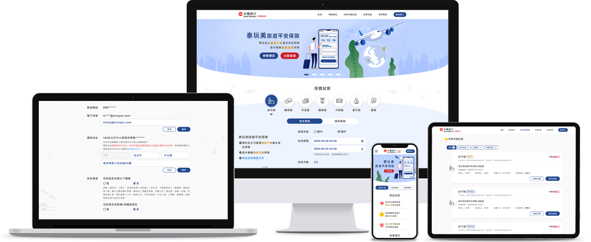
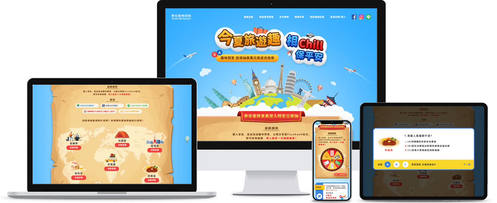
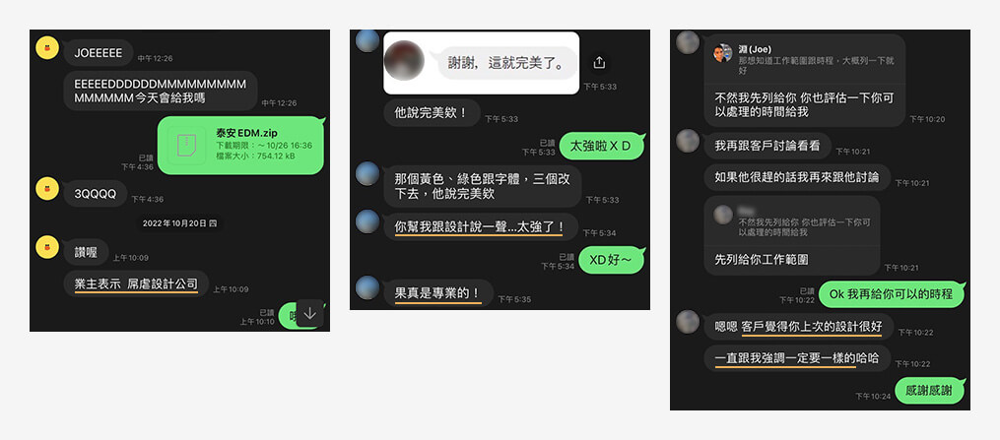

點擊
≡
可以
開啟頁面選單
了解，
關閉提示
目錄
作者資料
職能概貌
專長技能
職涯與規劃
工作專案
永豐銀行 網路投保網站
元大期貨 官方網站
裕隆集團 員工APP&管理後台
金融服務商 投資交易APP
泰安產物 行銷活動網頁
外部專案
UXD課程 健身場地預約系統
UX研究 共享交通產品開發
附錄
其他工作專案
個人練習
後記&聯絡方式
作品集後記
作者聯絡方式
第1頁
UI.UX作品集 ‧ 共18頁
目錄
作者資料
職能概貌
3
專長技能
4
職涯與規劃
5
工作專案
永豐銀行 網路投保網站
7
使用規劃→視覺設計→原型製作
元大期貨 官方網站
8
版面&視覺設計
裕隆集團
員工APP&管理後台
9
使用規劃→視覺設計→原型製作
金融服務商
投資交易APP
10
介面&視覺設計
泰安產物 行銷活動網頁
11
視覺設計→原型製作
外部專案
UXD課程 健身場地預約系統
13
規劃能力：PRD文件→資訊架構→產品藍圖
UX研究 共享交通產品開發
14
邏輯思維：定義議題→訪談調查→論述洞見
附錄
其他工作專案
16
B2B介面規劃、行銷網頁、網站視覺改版
個人練習
16
APP視覺稿
後記&聯絡方式
作品集後記
18
作者聯絡方式
18
第2頁
UI.UX作品集 ‧ 共18頁
作者資料
職能概貌
專長技能
職涯與規劃
第3頁
UI.UX作品集 ‧ 共18頁
職能概貌
王俊淵 Joe Wang
76/10/15
使用規劃到視覺原型
，
資深UI.UX設計師
職涯十年由淺至深的經驗累積。
近三年專案，客戶皆集團企業。
面對數位產業變化，保持學習熱忱。
能觀察資料脈絡，依邏輯論述想法。
職涯十年由淺至深的經驗累積。
近三年專案，客戶皆集團企業。
數位產業變化，保持學習熱忱。
觀察資料脈絡，依邏輯論述想法。
工作特質
追求脈絡
根據情況和前因後果，思考執行方向。
高學習力
對工作事務相關知識，積極主動求知。
構想全局
設想成果輪廓，提出執行步驟要點。
樂於合作
能與成員互動溝通，達成共識完成目標。
嚴謹負責
專注完善成果細節，遵守交付時程。
了解合作夥伴對於我的看法
第4頁
UI.UX作品集 ‧ 共18頁
專長技能
軟體操作
Photoshop：
熟悉7~8成軟體功能，配合圖庫網站和AI繪圖，能有效率完成視覺設計。
觀看相關作品
Illustrator：
能製作扁平風格的插畫素材、圖標Icon，轉為SVG圖檔用於介面設計。
觀看相關作品
Figma：
3~4年製作網站、APP介面的使用經驗，懂Auto Layout、Component、Library、Phototype設置。
*工作專案有成果展示
網站建置技術
Html&Css：
熟悉設計響應式網站介面，並以Html、Css切版成初步原型(Phototype)。
*工作專案有成果展示
Jquery：
能運用製作網站原型(Phototype)的操作元件，如：選單收合、彈跳視窗、Tab切換內容...等。
*工作專案有成果展示
前後端運作概念：
有基礎和工程師討論功能執行面之事務。
*工作專案有成果展示
知識領域
視覺設計：
對視覺理論在實作運用有一定心得，
能對產業類型規劃合適風格
。
*工作專案有應用說明
介面設計：
將視覺理論延伸運用，參考主流UI指南，如：IOS、Google、Bootstrap，規劃產品介面。
*工作專案有應用說明
數位產品規劃：
能釐清需求情境，規劃產品架構和操作流程，運用「易用性原則」完善使用體驗。
*工作專案有應用說明
第5頁
UI.UX作品集 ‧ 共18頁
職涯與規劃
2013/01
銘傳大學 數位媒體設計系
畢業
起點
2013/05 - 2014/05
多媒體、行銷公司任職
，製作網路行銷的活動網頁、廣告Banner。
前期
2014/05 - 2016/03
網站設計公司任職
，負責網站視覺設計，接續前端切版和維運更新。
中期
2016/04 - 2024/05
教育類科技公司、系統開發商任職
，協助規劃網站、APP產品、行銷網頁，處理使用介面、視覺設計和前端切版。
目前
從平面視覺到網站設計建置，後續有能力規劃數位產品，持續提升專案執行力。
方向與目標
深化UX領域知識，
如：商業策略、市場調查、研究框架、產品測試...等，
擴展自身知識與能力，期許加入有設計思維的團隊，
透過UX研究優化迭代，打造符合商業價值的數位產品。
未來
第6頁
UI.UX作品集 ‧ 共18頁
工作專案
網站開發&視覺設計
APP開發&介面設計
行銷活動網頁
第7頁
UI.UX作品集 ‧ 共18頁
永豐銀行 網路投保網站
專案介紹
永豐銀行代理保險商品，會員可直接線上投保，為此需要開發網站提供保險資訊、保費試算、線上繳費...等投保服務。

商業價值
個人觀察解讀，非永豐銀行實際策略
永豐銀行專案執行目的：
多元的金融服務，促進會員品牌忠誠度。
以會員數作為保險公司的合作誘因，獲取仲介營收。
獲取保險產業動向與策略，藉此規劃利基點擴大營利。
保險公司合作目的：
提高品牌和商品曝光率。
增加商品銷售管道。
增加民眾成為自家保戶的轉換率。
無須額外開發、維運的人力成本。
個人負責工作
網站規劃：
進行需求訪談，依記錄製定內容架構、使用流程、頁面布局並繪製wireframe，協助完成PRD文件使網站開發有所依據。
內容展示
*
說明個人執行事項與能力為主。
*
PRD文件為團隊合作產出，含有資訊安全和業務邏輯資料，故不展示於作品集。
視覺稿
Mockup
：
Wireframe定案後，為整合出美觀易用且符合業務形象之網站平台，與需求方討論進行風格、配色、介面布局...等規劃，並產出mockup給予確認。
視覺稿、設計規範、設計亮點
初步原型
Phototype
：
依mockup進行html.css搭配jquery前端切版，完成初步的phototype確認操作需求。
原型展示(Figma)
原型展示(前端切版)
第8頁
UI.UX作品集 ‧ 共18頁
元大期貨 官方網站
專案介紹
以既有網站架構、資料，規劃視覺風格和版面布局，提升易讀性、易用性與格局質感。
個人負責工作
視覺提案：
元大期貨以招標方式尋找他家公司合作，除了我方還有兩家上市企業設計部門參與標案。
個人製作兩款網站首頁圖，
即使報價遠高於其他公司，因視覺設計符合他們的期待，所以將專案交予我方公司執行
。
視覺風格提案(一)
*
觀察客戶營業屬性(網路金融交易、投資顧問)，導出「專業、理性、科技」的形象進行設計。
視覺風格提案(二)
*
與風格(一)不同，以營業屬性次要形象「親切、安心、年輕化」進行設計。
視覺稿
Mockup
：
專案以視覺風格(一)得標後，進行後續討論，完成網站全部頁面視覺稿。
視覺稿、設計規範、設計亮點
第9頁
UI.UX作品集 ‧ 共18頁
裕隆集團 員工APP和管理後台
專案介紹
將員工福利商品、活動、公告、職缺和職務資訊整合至APP，並有後台進行維運管理，提升集團內部訊息布達效率。
專案介紹
將員工福利商品、活動、公告、職缺和職務資訊整合至APP，並提供後台給予維運單位進行管理，提升集團內部布達訊息的效率。
個人負責工作
規劃APP&管理後台：
進行需求訪談，依記錄規劃APP&管理後台的使用和介面布局，繪製wireframe使專案開發有所依據、對焦共識。
規劃內容
*
避免違反保密原則，故刪減業務邏輯、資安疑慮的資訊，只以概念說明內容規劃。
*
了解詳細產品規劃能力，可瀏覽
UXD產品設計課程 成果展示
。
APP視覺稿
Mockup
：
Wireframe定案後，為整合出美觀且符合使用之APP，與需求方訪談後進行風格、配色、介面布局...等規劃，並產出mockup給予確認。
視覺稿、設計規範、設計亮點
個人負責工作
規劃APP&管理後台：
進行需求訪談，依記錄規劃APP&管理後台的使用和介面布局，繪製wireframe使專案開發有所依據、對焦共識。
規劃內容
*
避免違反保密原則，故刪減業務邏輯、資安疑慮的資訊，只以概念說明內容規劃。
*
了解詳細產品規劃能力，可瀏覽
UXD產品設計課程 成果展示
。
APP視覺稿
Mockup
：
Wireframe定案後，為整合出美觀易用且符合集團形象之APP，與需求方討論進行風格、配色、介面布局...等規劃，並產出mockup給予確認。
視覺稿、設計規範、設計亮點
APP初步原型
Phototype
：
以Figma功能製作展示用的phototype，在開發前確認操作需求。
原型展示(Figma)
APP初步原型
Phototype
：
以Figma功能製作展示用的phototype，在開發前確認操作需求。
原型展示(Figma)
第10頁
UI.UX作品集 ‧ 共18頁
金融服務商 投資交易APP
專案介紹
Mobile First希望品牌網站的服務功能也可在APP使用，因此進行介面規劃和製作。
專案介紹
Mobile First希望品牌網站的服務功能也可在APP使用，因此進行介面規劃和製作。
個人負責工作
視覺提案：
歸類色彩意涵、形象風格、版面布局進行說明，於會議給予需求方參考，對焦視覺設計方向。
提案內容
視覺稿
Mockup
：
視覺設計方向確認後，以需求方提供的簡易wirfeame，給予操作流程、介面配置的建議，討論後產出mockup。
視覺稿、設計規範、設計亮點
個人負責工作
視覺提案：
歸類色彩意涵、形象風格、版面布局進行說明，於會議給予需求方參考對焦視覺設計方向。
提案內容
視覺稿
Mockup
：
視覺設計方向確認後，以需求方提供的簡易wirfeame，給予操作流程、介面配置的建議，討論後產出mockup。
視覺稿、設計規範、設計亮點
第11頁
UI.UX作品集 ‧ 共18頁
泰安產物 行銷活動網頁
專案介紹
暑期推廣旅平險商品，以旅遊主題製作網頁提供抽獎活動和旅平險資訊，提高民眾投保意願。

個人負責工作
視覺稿
Mockup
：
需求方討論活動概念後，依資料項目設計視覺圖。
視覺稿、設計亮點
初步原型
Phototype
：
確認視覺圖後，進行前端切版製作初步原型。
原型展示(前端切版)
第12頁
UI.UX作品集 ‧ 共18頁
外部專案
UXD課程 產品設計
UX研究 產品開發
第13頁
UI.UX作品集 ‧ 共18頁
UXD課程 健身場地預約系統
展示緣由
講師20年產品設計經驗，課程內容實用且成熟。
模擬專案中，需考量3種不同的使用者，設計思維較有深度。
獨立作業完整呈現個人規劃能力。
課程介紹
當人們有相似的需求產生，並能藉由數位產品解決時，設計師如何釐清需求脈絡進行規劃，產出明確且有架構的規格文件作為團隊開發依據。
專案介紹
產品規劃：
從訪談紀錄了解健身房業務邏輯，整合三位利害關係人「學員」、「教練」、「營運方」的需求情境，並規劃一套系統平台給予使用。
PRD文件：
由訪談紀錄描繪服務流程圖，整理需求情境，規劃對應的系統功能，從中定義資料項目、狀態變化和操作規則。
資訊架構
IA
：
依PRD文件規劃系統機制，並示意資料欄位具體內容。
產品藍圖：
由資訊架構規劃系統地圖(Sitemap)，依續製作頁面架構圖，最終產出線框稿(Wireframe)提供完整規格說明。
PRD、IA、頁面架構圖
Wireframe規格內容
規劃脈絡、設計亮點
第14頁
UI.UX作品集 ‧ 共18頁
UX研究 共享交通產品開發
展示緣由
負責人為業界UX顧問，工作流程扎實且專業。
小組合作執行UX研究，交付成果深受業主肯定。
定義議題到洞察價值，展現個人邏輯思維。
專案介紹
研究目標：
--
定義議題：
--
訪談調查：
--
研究洞見：
--
研究過程簡報
個人亮點
第15頁
UI.UX作品集 ‧ 共18頁
附錄
其他工作專案 & 個人練習
第16頁
UI.UX作品集 ‧ 共18頁
其他工作專案
鐵路事故案件管理
依需求描述規劃案件紀錄、分類、統計的B2B平台介面。
介面設計圖
工業用地業務管理
依業務需求項目，進行B2B平台介面設計與配置規劃。
介面設計圖
個人練習
旅遊社群APP
使用者分享旅遊經歷，透過留言和評價獲得真實資訊。
介面設計圖
股票投資APP
幫助使用者在股票市場這座礦山挖掘自己的財富。
介面設計圖
銀行APP Redesign
以使用者體驗出發，重製APP架構和介面設計。
介面設計圖
第17頁
UI.UX作品集 ‧ 共18頁
後記&聯絡方式
作品集後記 & 作者聯絡方式
第18頁
UI.UX作品集 ‧ 共18頁
作品集後記
製作緣由：
記錄職涯十年的回顧與展望。
展現所學所能，期望加入有設計思維的團隊。
易用性設計：
以書籍版式進行設計，貼近閱讀習慣、減少理解負擔。
選單配置各頁錨點連結，可自行決定瀏覽順序。
易讀性設計：
作品內容分層呈現：
先提供內容標題、簡述和連結。
點選內容連結，開啟視窗呈現重點資料，附上Figma網址。
點選網址，至Figma展示完整內容。
瀏覽者能淺至深快速閱讀，選擇內容接續瀏覽。
作者聯絡方式
徵才需求
若貴公司有合適職缺，期望有面試機會能彼此認識交流。
我的電子信箱：
a52363037@yahoo.com.tw
工作履歷 Resume
給予回饋
若您對作品集或當中作品有任何想法或建議，
歡迎填寫表單
讓我了解。
回饋表單 Google Form
最後感謝您的來訪，很高興有機會向您展示我的作品集 :)
合作夥伴對於我的看法
UX系統工作坊
成員們對我的描述。
UX研究專案
組員們對我的觀察了解。
專案負責人對於我論述洞見的回饋。
工作表現
公司業務主管反應客戶對於設計的評價。
外包案件雇主對於合作後的感受。

已瀏覽完
合作夥伴對於我的看法
全部內容
Photoshop相關作品
2013年進入職場，職場對於設計師的需求多是網路廣告、行銷活動網頁的製作，所以滿苦心鑽研Photoshop影像合成、滑鼠繪圖的技法，
直到2019年圖庫網站興起、figma問世，轉為UI.UX設計。
影像合成
滑鼠繪圖
工作運用
機車改裝用品網站(AI繪圖+影像合成)
女性用品活動網站
教育產品行銷網站
建商行銷網站
已瀏覽完
Photoshop相關作品
全部內容
Illustrator相關作品
印刷相關
在學生時期和職涯初期
，不少產業有平面印刷的設計需求，所以學習Illustrator作為工作技能。
網路店家貼紙
郵政金融卡
3折DM設計
介面相關
職涯中期
，業界推崇SVG圖檔作為APP、網頁切圖選擇，所以開始用Illustrator製作插畫素材和Icon。
插畫素材(旅遊APP導引頁)
Icon設計(投資APP)
圖庫素材二創運用
目前工作
為求效率會搭配圖庫素材作業，向量檔會用Illustrator修改重製。
旅平險EDM
Icon設計(投資APP)
已瀏覽完
Illustrator相關作品
全部內容
網路投保網站 規劃內容
流程架構
頁面布局
線框稿
一、釐清業務流程與需求情境
從保險業務了解簽訂保單的過程。
由簽訂保單過程，整理重點事項
依客戶保險需求，介紹商品資訊。
評估客戶條件給予投保建議。
確定投保意願，說明相關條款和規定。
填寫客戶投保申請資料。
確認客戶同意相關條款和規定。
收取投保費用。
申請投保。
詢問客戶是否有投保相關問題。
推廣公司行銷活動。
找出簽訂保單的認知需求
整理保險商品重點、理賠項目額度、投保規定。
依條件規劃方案、計算投保費用。
備妥商品條款和規定文件。
備妥申請投保資料表單。
於條款和規定文件中，讓客戶同意簽名。
取得付款資料。
將保險資料留存紀錄，寄送至核保單位。
了解客戶常有的問題並備妥回答內容。
備妥行銷活動文宣。
二、規劃網站操作流程與內容
確認網站使用目標
參考簽訂保單過程，規劃操作流程
參考簽訂保單的認知需求，規劃網站內容
保險商品
保險商品資訊。
投保費用試算。
商品條款和投保文件。
投保流程
投保表單。
審閱文件機制。
繳納保費。
身分驗證。
投保申請紀錄。
客戶服務
常見問答。
活動資訊。
三、針對流程步驟，定義功能流程圖
以繳納保費到完成投保申請為例。
四、以操作流程和網站內容，歸納資料項目
五、釐清資料項目來源、內容和操作機制
網
站
會
員
來源：
使用者登入永豐會員後，前端抓取使用者Token和永豐提供會員API，給予後端抓取資料建立。
內容項目：
來自永豐網銀會員API文件。
使用者
操作機制：
使用者
可以註冊/登入網站會員。
將使用者導向永豐網銀登入頁，註冊會員登入後，導回至本站。
保
險
商
品
來源：
各家保險公司提供API，由本站後端透過API抓取保險資料，建立網站保險商品資料。
內容項目：
來自各家保險公司API文件、永豐保險業務API文件。
使用者
操作機制：
使用者
可以查看保險商品資訊。
商品資訊：種類、介紹、理賠方案、相關條款與規定。
可以對保險商品進行投保費用試算。
可以申請投保保險商品
需登入為永豐銀行會員。
投
保
申
請
資
料
來源：
網站會員資料、保險商品資料、使用者於前端輸入而產生的投保資料，並由後端產生管理資料(如：保單編號)。
內容項目：
保單管理：
申請時間、訂單號碼、處理狀態。
要保險人 / 被保險人資料：
姓名、性別、國籍、身分證字號、出生日期、連絡電話、電子郵件、通訊地址。
保險內容：
來自保險公司API文件。
核保資料：
來自保險公司API文件。
受益人資料：
與被保險人關係、受益人順位、姓名、性別、國籍、身分證字號、出生日期、連絡電話、通訊地址、銀行帳戶。
使用者
操作機制：
使用者
可以填寫投保申請資料表單。
要保險人/被保險人資料、保險內容、核保資料、受益人資料。
可以查看投保申請資料紀錄。
訂單資訊：申請時間、訂單編號、保單號碼、處理狀態。
申請內容：要保險人/被保險人資料、保險內容、核保資料、受益人資料。
常
見
問
答
來源：
建立管理後台，由永豐業務單位上傳資料。
內容項目：
問答管理：
類別、題號、問題描述、答題內容。
使用者
操作機制：
使用者
可以查看常見問答內容。
問答內容：會員須知、投保申請、保險資訊。
活
動
資
訊
來源：
建立管理後台，由永豐業務單位上傳資料。
內容項目：
活動管理：
名稱、內容描述、成果公布、注意事項。
使用者
操作機制：
使用者
可以查看活動資訊。
活動資訊：名稱、內容、成果公布、注意事項。
六、釐清網站操作機制
接續以規劃內容，建立
頁面布局
已瀏覽完
流程架構
全部內容
一、網站地圖
二、網站頁面架構圖
以投保流程為例。
審閱指引
線框稿內容
以旅平險投保流程為例。


 點擊頁碼可前往該主題頁面
點擊頁碼可前往該主題頁面